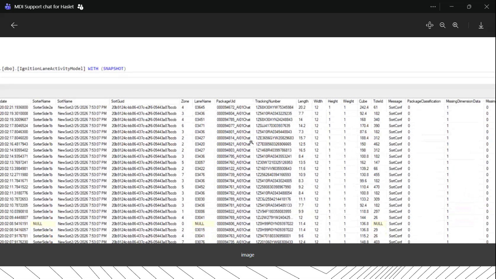
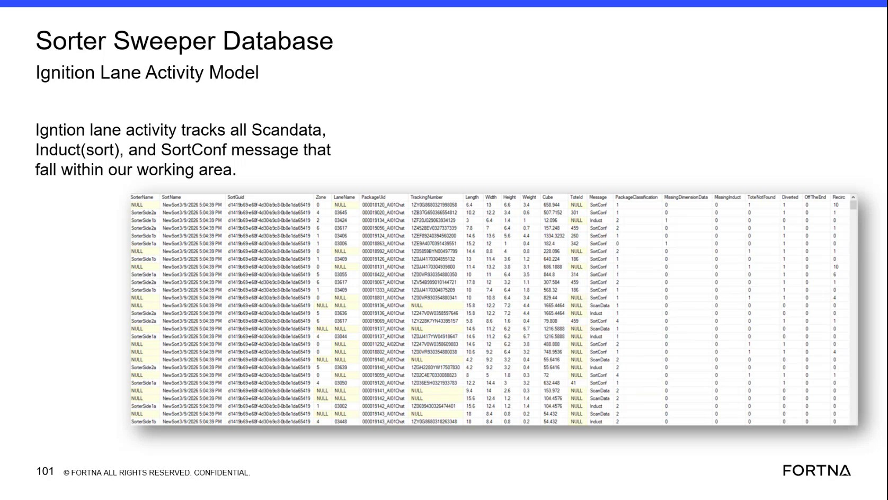
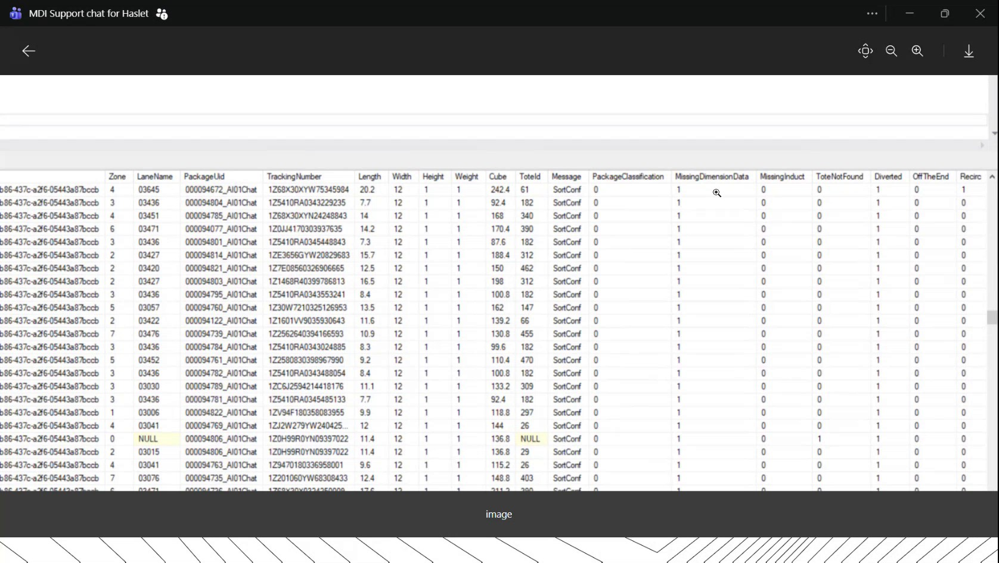
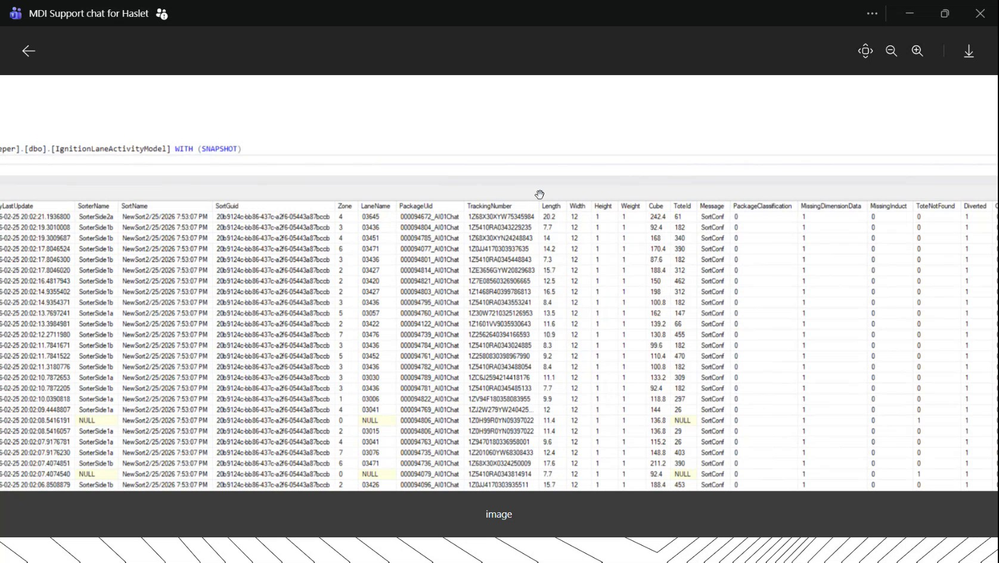

| Procedure ID | proc_inspect_ignition_lane_activity_records_v1 |
|---|---|
| Title | Inspect Ignition Lane Activity Records in the WCS / Helix DB |
| Procedure Type | diagnostic |
| Primary Role | L2_support |
| Support Safe | Yes |
| Capability Tags | sorter_item_or_scan_state |
| Access Surface | wcs_sql |
| Audience Roles | L2_support, L3_support |
| Failure Pattern Tags | miss_scan_or_dimension_fallback |
| Validation Status | needs_sme_review |
| Merge Status | source_finalized |
Use the WCS / Helix DB (SSMS) read-only view of [dbo].[IgnitionLaneActivityMode] with the SNAPSHOT qualifier to inspect lane activity, package identifiers, measurements, classification, message values, and missing-dimension fields for lane or package troubleshooting.
Use the WCS / Helix DB (SSMS) for read-only troubleshooting when a lane or package requires inspection of Ignition lane activity, sorter and lane identity, package measurements, message status, classification, or missing-dimension data.




Responsible role: L2_support
Instruction:
In WCS / Helix DB (SSMS), open the read-only query or view for [dbo].[IgnitionLaneActivityMode] with the SNAPSHOT qualifier. Do not edit the object or its records.
Expected result:
The WCS / Helix DB (SSMS) result grid opens and identifies the [dbo].[IgnitionLaneActivityMode] object with the SNAPSHOT qualifier.
Stop or Escalate If:
Responsible role: L2_support
Instruction:
In the WCS / Helix DB (SSMS) result grid, inspect the date or timestamp and the SorterName, SortName, SortGuid, Zone, and LaneName fields. Use the available incident time, sorter, zone, or lane information to identify the relevant records.
Expected result:
The result grid provides timestamped records with displayed sorter, sort, GUID, zone, and lane-name values that can be compared with the affected lane or sorter context.
Stop or Escalate If:
Responsible role: L2_support
Instruction:
For the affected lane or package in the WCS / Helix DB (SSMS) result grid, locate PackageUid and TrackingNumber. Compare the displayed Length, Width, Height, Weight, and Cube values for the associated record.
Expected result:
The package record can be identified by PackageUid and/or TrackingNumber, and its displayed measurement fields can be compared, including populated, blank, null, or dash-valued entries.
Stop or Escalate If:
Responsible role: L2_support
Instruction:
In the WCS / Helix DB (SSMS) result grid, inspect Message, PackageClassification, and MissingDimension Data. Note displayed values such as NewSort, SortConf, numeric flags, nulls, blanks, or dash-valued fields. Treat these as observations; do not assign an operational fault meaning unless it is established by L2/L3 support.
Expected result:
The record shows the displayed message or status-like value, package classification, and missing-dimension data value for the affected record.
Stop or Escalate If: